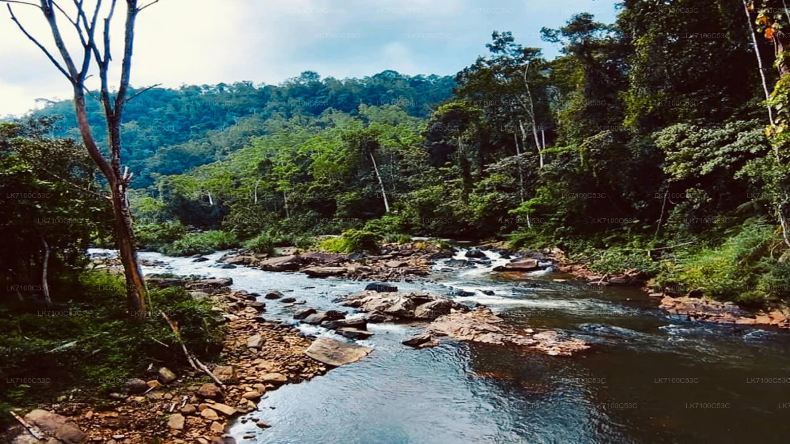
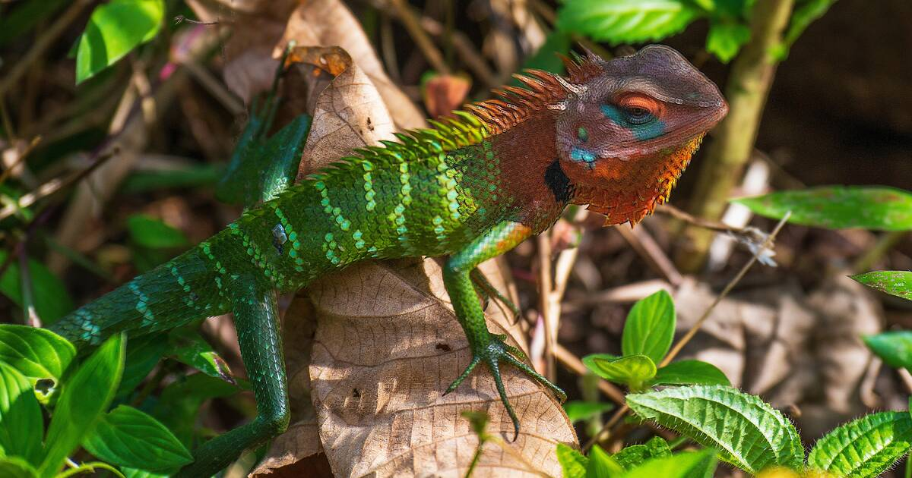

Sri Lanka's Biodiversity Treasure
Sinharaja is Sri Lanka's last major primary rainforest and a UNESCO biosphere reserve. It offers rich biodiversity, endemic bird life, and lush jungle trails for nature lovers.
Highlights & Experiences
- Rainforest Trails: Guided walks through dense tropical forest.
- Bird Watching: Endemic species and mixed-flock sightings.
- Eco Experience: Pure forest atmosphere and natural streams.


Quick Facts for Travelers
- Best Time: January to April and August to September.
- Tip: Hire a local guide for best wildlife spotting.
- Main Highlight: One of South Asia's richest rainforest ecosystems.